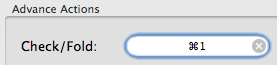

Clearing a hotkey.
Clearing a hotkey setting is a one-click process.

To clear a hotkey:
- Find the hotkey field you wish to clear.
- Click on the "X" on the right-hand side of the field.
- The field will now display "Click to record shortcut". This means that the hotkey has been cleared.